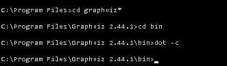

|
PlantUMLは、シンプルで人間が読むことのできるテキストの記述を使って、UMLの図を描くために使われます。
ご注意いただきたいのは、矛盾した図が描画されてしまうことです。（例えば、２つのクラスがお互いに継承し合うような図です。）
ですからPlantUMLは、モデリングツールというよりはむしろ描画ツールです。
- PlantUML はテキストベースのツールで、つまり、人間が読める簡単な言語で文章を書 くことによって図を作成することができます。 * そのため、図解ツールの専門家でなくても、図の構造を理解し、編集することが容易になります。
- PlantUMLはオープンソースで、無料で利用することができます。つまり、ライセンス料や購読料を支払うことなく、使用することができるのです。
- PlantUML は、インテリジェントなレイアウトアルゴリズムを使用して、ダイアグラムの要素を明確でわかりやすい方法で配置し、個々の要素を手動で配置したり整列させたりする時間と労力を省きます。
- PlantUML はジェネレータであり、提供されたテキストを基に自動的に図を 作成します。これにより、図の作成と更新が容易になり、見た目を気にすることなく、図の構造や関係を表現することに集中することができます。
- PlantUML は高度なカスタマイズが可能であり、図の外観をカスタマイズするための多くのオプションを提供します。また、PlantUML コミュニティの知識と専門性を活用することで、一般的なレイアウトの問題に対する解決策を見つけることができます。
全体として、PlantUML は、プロフェッショナルな外観のダイアグラムを迅速かつ簡 単に作成するための強力かつ多用途なツールです。特に、シンプルでテキストベースのアプローチを好むユーザーや、ダイアグラムのレイアウトや外観を自動的に処理することができるツールを求めるユーザーに適しています。
In essence, PlantUML emerges as a potent and adaptable tool, facilitating the swift and effortless creation of professional diagrams. It caters especially to individuals who favor a text-based methodology for diagram creation, offering automated assistance in managing the layout and visualization of the diagrams.
WARNING This translation need to be updated. WARNING
- You can use themes with PlantUML
あなたは、PlantUML でテーマを使用して、図の外観をカスタマイズすることができます。PlantUML は、使用できるいくつかの組み込みテーマを提供し、また、独自の色やスタイルを定義することで、独自のカスタムテーマを作成することができます。
- PlantUML は、あなたに代わって多くのレイアウト作業を行います。
PlantUML は、あなたに代わって多くのレイアウト作業を行うため、あなたはダイアグラム の関係や構造を表現することに集中することができます。インテリジェントなレイアウトアルゴリズムを使用して、ダイアグラムの要素を明確でわかりやすい方法で配置するため、個々の要素を手動で配置したり整列させたりする時間と労力が節約されます。このため、手作業に頼ることなく、プロフェッショナルな外観の図を素早く作成するための優れたツールです。
- PlantUML はジェネレータであり、要素の位置決めツールではありません
PlantUML はジェネレータです。つまり、提供されたテキストに基づいて自動的に図を作成します。これは、ダイアグラム内の個々の要素を手動で位置づけ、配置することができる他のいくつかのダイアグラムツールとは異なるものです。
この方法の主な利点は、個々の要素の具体的な配置を気にすることなく、素早く簡単に図を作成できることです。また、図を表すテキストを変更するだけで、PlantUML が自動的に図を更新し、変更を反映させるため、図の更新が容易になります。
PlantUML のようなジェネレータを使用することの潜在的な欠点は、要素を手動 で配置できるツールで行うほどには、ダイアグラムの正確なレイアウトを制御できない かもしれないということです。しかし、多くのユーザにとって、ジェネレータを使用することで節約できる 時間と労力は、この制限を補って余りあるものです。
さらに、PlantUML コミュニティ・フォーラムは、一般的なレイアウトの問題に対する解決策を見つけたり、ダイアグラムの外観をカスタマイズするためのヒントやトリックを共有するための素晴らしいリソースです。
For those seeking advice or solutions to common layout issues, the [PlantUML community forum](https://forum.plantuml.net/) stands as a vibrant platform to exchange tips and procure answers to your dilemmas, enhancing your mastery over customizing your diagrams.
WARNING This translation need to be updated. WARNING
PlantUML Server で生成されたPNG画像やSVG画像へのリンクは永続的に有効です (つまりサーバが死なない限りは)。
しかしながら、どんな図もサーバには保持されません。
これは矛盾しているように聞こえるかもしれませんが、そうではありません。全ての図は圧縮されURL自身に埋め込まれます。URLを受け取ると、サーバはURLから図のテキスト情報を復元し、画像を生成します。 このため、何も保持する必要がないのです。仮にサーバがダウンしたとしても、コマンドラインで-decodeurlフラグを使用すれば図の内容を取得することが可能です。さらに、図のデータはPNG画像のメタデータに保存されているため、ダウンロードした画像からも図の内容を取得することが可能です。
時折、私たちはサーバをHTTPのTRACEを有効にすることがあるかもしれません。これは主にパフォーマンスの問題(がいくつか発生した場合)でトラフィックを把握するために行います。問題が解決してしまえば、HTTPのTRACEを無効化し、ログも削除します。
内容がセンシティブでないかについても考慮に入れてください。たとえ私たちが生成した図を保持しないと言っても、全てのトラフィックはHTTPを通るので捕捉が容易であることを念頭に入れてください。
そのため、センシティブな情報を含む図を生成しようと考えている場合は、ご自分のネットワークにローカルサーバを立てるべきかもしれません。
PlantUML は様々なシステムでインストールされており、インストール時に発生したマイナーな問題がユーザから報告されることがあります。
こちらのページをご覧になれば、何が誤っているか手引きを受けられるかもしれません。
Graphvizの詳細はこちらを参照してください。
テスト済みで、動作するものとなっているバージョンは以下のとおりです：
- 2.26.3
- 2.28
- 2.30.1
- 2.34
- 2.36
- 2.38
- 2.44
注意： バージョン 2.39 と 2.42 は PlantUMLではうまく動作しないようです.
バージョン2.44をWindowsで使用する場合、インストールを完了させるために、以下の例のようにdot -cをコマンドラインで実行する必要があるかもしれません。

dot -cコマンドは管理者権限で実行する必要があるかもしれません。
他の選択肢は、Win32 version of GraphViz 2.44をインストールすることです。こちらの場合、インストール後の作業は不要です。
Graphviz を自身でコンパイルする場合は、 PlantUML が動作するのに必要な libexpat もビルドする必要があります。
Google Trendsは前向きな傾向です。そして、PlantUMLに関する本もいくつかあります。つまり、成熟していると言えるでしょう。
PlantUMLは継続的インテグレーションの考え方で開発されているので、頻繁に新規のリリースが行われ、(理想的には)後方互換性も保たれています。PlantUML.jarというファイルはその都度変更されますが、ずっと同じファイル名のままです。
使用している正確なバージョンを知りたい場合は、コマンドラインで次のように入力してください:
java -jar plantuml.jar -version
もしくは、次の特別なダイアグラム記述を使用してください:
@startuml
version
@enduml
新しいバージョンがダウンロードできるかどうかは、ダウンロードページを確認してください。
また、以下のRSSを購読することもできます。
また、次のコマンドを使用することもできます。
java -jar plantuml.jar -version
または、次の特別なダイアグラム記述を使用してください。
@startuml
version
@enduml
PlantUMLは画像の幅と高さを4096に制限しています。この制限を上書きするための環境変数PLANTUML_LIMIT_SIZEが存在します。PlantUMLが起動される前にこの環境変数が設定されている必要があります。以下のように設定できます。
set PLANTUML_LIMIT_SIZE=8192
または
setenv PLANTUML_LIMIT_SIZE 8192
以下のように、コマンドラインの引数として指定することもできます。
java -DPLANTUML_LIMIT_SIZE=8192 -jar /path/to/plantuml.jar ...
ただし、非常に大きな（例えば、 20 000 x 10 000 ピクセルを超えるような)図を作成しようとした場合、メモリ問題が発生する可能性があります。 この場合、以下のパラメータをjava vmに与える必要があります。-Xmx1024m.
文字コードは注意を要する問題です。デフォルトではPlantUMLは、プラットフォームのデフォルトの文字コードを使用します。それはUTF-8かもしれませんし、違うかもしれません。使用している文字コードを知りたい場合は、次のコマンドを使用してください:
java -jar plantuml.jar -help
...
-charset xxx To use a specific charset (default is windows-1252)
...
違う文字コード(例えばUTF-8)を使いたい場合は、-charsetフラグを使用してください:
java -jar plantuml.jar -charset UTF-8 ...
unicodeに関する情報はこちら。Javaは、UTF-8に設定した場合でもB.O.M. (Byte Order Mark)をサポートしませんが、PlantUMLに回避策が含まれているので、これに関する問題は発生しません。
PlantUMLを起動する前に、シェルでLANG変数にja_JP.UTF-8を設定する必要があると、日本人のユーザから報告が上がっています。
export LANG = ja_JP.UTF-8
新しいアーキテクチャの採用後は、Javaで東アジアの文字を描画できるようになったので、この対応は不要になりました。
コマンドラインにて -eps フラグを入力するか、ANT タスクにて format="eps" を指定してください。
You can use the ``-teps`` flag in the command line, or ``format="eps"`` in [the ANT task](ant).
WARNING This translation need to be updated. WARNING
現在、対応に向けて 取り組んで います。
短い回答: ダイアグラムの開始には必ず @startuml (もしくは @startditaa、@startjcckit...)を使用してください。
長い回答:
@startuml/@startditaa/@startjcckit はダイアグラムの種類(uml, ditaa, jcckit...)を決定するのに役立っています。そして、@start○○の後に任意でファイル名を記述することができます。また、一つのファイルに複数のダイアグラムを含めることもできます。
PlantUMLの過去のバージョンでは、ditaaやjcckitをサポートしていませんでした。-pipeフラグを使用すると、標準出力にダイアグラムが生成されるため、標準入力から入ってくるダイアグラムは1つだけです。そして、ファイル名を指定する必要もありません。これらの理由から、-pipeフラグを使う場合、@startumlは不要でした。
その後、この仕様は訂正されることになり、-pipeフラグを使用した場合も含めて、常に@start○○が必要となりました。これは、ユーザの混乱を防ぐためでもあります。
残念ながら、-pipeフラグ使用時に@startumlが不要であるという事実に基づいて作られた既存のスクリプトが存在しているため、それらの古いスクリプトが実行できるように、この仕様はdeprecatedな選択肢として残してあります。私たちは後方互換性に気を配っています。
新規のスクリプトでは、この仕様に頼らず、-pipeフラグ使用時も@start○○/@end○○を使用してください。
PlantUMLはGPLライセンスの下で配布されています。
次のコマンドラインオプションを使ってライセンスを出力することができます。
java -jar plantuml.jar -license
もしくは次の特別なダイアグラムを使用してください。
@startuml
license
@enduml
以下のライセンスも利用可能です:
これらのバージョンには、いくつかの機能(例えばDITAA)が含まれていません。しかしUMLダイアグラムの生成に関しては100%可能です。
これらのバージョンでライセンスを出力するには、次のコマンドラインオプションを使用します:
java -jar plantuml.jar -license
もしくは、特別なダイアグラムを使用することができます:
@startuml
license
@enduml
いいえ、いずれも適用されません。
PlantUMLを実行して生成した画像は、そのフォーマット(PNG, SVG...)にかかわらず、対応するソースコード(つまり、PlantUML言語のテキストによる記述)の作成者の所有物となります。
PlantUMLを実行して生成した画像は、「対象著作物(covered work)」とはみなされません。それらは自由に使用することができます。
生成された画像を使用する際に、GPL/LGPL/ASL/EPL/MITいずれのライセンスに言及する必要もありません。また、PlantUMLによって生成されたことを明示していただくとPlantUMLチームは喜びますが、これは必須の要求事項ではありません。
例外として、PlantUML言語で書かれたテキストに何らかのライセンス(GPL/LGPL/ASL/EPL/MITなど)が適用されている場合、論理的には生成された画像もそのライセンスの対象となります。
Javaのソースコードとjarファイルに手を加えていない限り、他のクローズドなソフトウェアにPlantUML.jarを組み込むことができます。
唯一の制限事項は、ソフトウェアがPlantUMLを使用していてPlantUMLがLGPLの下で配布されているということを、そのソフトウェアのライセンスもしくはドキュメンテーション中に表示する必要があるということです。
それ以外の制限事項は無く、そのソフトウェアを販売して対価を得ることも可能です。(しかしながら、その場合でも寄付は歓迎します:-))
PlantUML記法自体にはライセンスはありません。つまり、誰でも使うことができます。
コード中のコメントとしてPlantUMLを使用することができます。そのコメントはあなた自身の所有物となります。それらは「対象著作物(covered work)」とはみなされず、GPL/LGPL/APL/EPL/MITライセンスの対象でもありません。
実装されたもの(つまり、PlantUMLのプログラム)のみがGPL/LGPL/ASL/EPL/MITライセンスの対象となっています。一方で、PlantUMLのウェブサイトで公開されている文書類(使用例や注意事項など)は、著作権で保護されています。しかし、オリジナルのドキュメンテーションを作ることは可能です。
PlantUMLはGraphvizを使用してダイアグラムを生成しています。PlantUMLはdotプログラムを実行し、dotにより生成されたSVGデータを取得します。
このメッセージは、PlantUMLがdotプログラムから、空のSVGデータを受け取ったためUMLダイアグラムの生成に失敗した場合に表示されます。これにはいくつかの理由が考えられます。
- Graphvizのインストールに問題があった場合。クラス一つだけなどの簡単なダイアグラムの生成を試してみてください。
- Graphvizのバージョンが古すぎて、PlantUMLから渡された情報を処理できなかった場合。
testdotコマンドでバージョンを確認してください。
- ダイアグラムが複雑すぎる場合。
- PlantUML and/or dotのバグ。
java.lang.NoClassDefFoundError: Could not initialize class net.sourceforge.plantuml.ugraphic.UFontというエラーメッセージが表示された場合、それは、サーバーにフォントがインストールされていないことを意味していると思われます。
その場合、システムにfontconfigを追加することで解決できます：
sudo yum install fontconfig
または
sudo apt-get install fontconfig
WARNING This translation need to be updated. WARNING
PlantUMLをグラフィック機能の無いLinuxサーバーで実行すると、何らかのエラーが表示される場合があります:
- Can't connect to X11 window
- X11 connection rejected because of wrong authentication.
- HeadlessException
基本的にこれは、PlantUMLがグラフィック関連のリソースを必要としていることが原因です(詳しくはこちら)。
PlantUMLをheadlessモードに設定するには-Djava.awt.headless=trueフラグを使用してください。
例:
/usr/bin/java -Djava.awt.headless=true -jar /data/PlantUml/plantuml.jar ...
If you see a similar message on MacOS Ventura after running plantuml with no arguments, this is a known issue but does not appear to indicate a problem since sub-commands (like -gui) do work.
Mac OS Xで次のようなエラーが表示された場合、
Error java.lang.UnsatisfiedLinkError / liblwawt.dylib /libosxapp.dylib
次のサイトの説明に従ってください。http://stackoverflow.com/questions/25914757/osx-yosemite-jvm-shared-library-does-not-contain-the-jni-createjavavm-symbol:
- JavaForOSXというパッケージをダウンロードし、インストールします。
AptanaStidio3.iniというファイルを探します。デフォルトでは次のディレクトリにあります: /Applications/Aptana Studio 3/AptanaStudio3.app/Contents/MacOS-vm引数で使用するJavaを指定してAptana Studioを起動します: -vm /Library/Java/JavaVirtualMachines/1.6.0.jdk/Contents/Home/bin/java
Java 6のみで動作するようなので、次のようなエイリアスを定義してスクリプト中で使用してください。
alias java6="export JAVA_HOME=$(/usr/libexec/java_home -v 1.6.0)"
設定に応じて、次のフラグを試してみてください。-Djava.awt.headless=true.
例:
/usr/bin/java -Djava.awt.headless=true -jar /path/to/plantuml.jar ...
コマンドラインで-cypherオプションを使用すると、通常の画像ファイルの代わりに.preprocファイルを生成します。
生成された.preprocファイルは、入力されたダイアグラムに似ていますが、すべての単語(PlantUML言語のキーワードを除く)がランダムな文字列に置き換えられています。
-cypherオプションを付けて何度か実行すると分かるように、毎回異なるテキストが生成されます。
また、この変換を行っているCypher.javaを見ると、元のダイアグラムを復元するようなバックドアが存在しないことを確認できると思います。
元のダイアグラムで何か問題が発生する場合、変換されたファイルでも同じ問題が発生することが期待できます。
変換後のファイルは全く無意味なものなので、安心して私たちに送ってください。あなたが元々何を作っていたのかを推測する手段は、私たちにはありません。
しかし、問題を再現して修正することができれば、元の(機密情報を含む)ダイアグラムでも問題が解消するでしょう。
WARNING This translation need to be updated. WARNING
以下のようなエラーメッセージが表示されたようでしたら :
The currently displayed page contains invalid values
Windows/Preferences/PlantUML が表示されている場合、Eclipseを終了して、コマンドラインから-cleanフラグを使用してみてください。
eclipse -clean
その場合には、この フォーラム で質問してみてください。
きっと誰かがあなたの質問に回答してくれるでしょう！
|